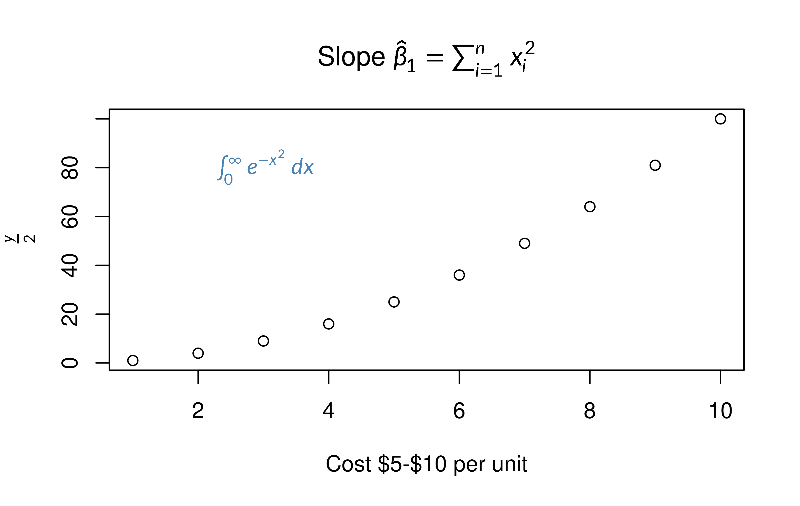
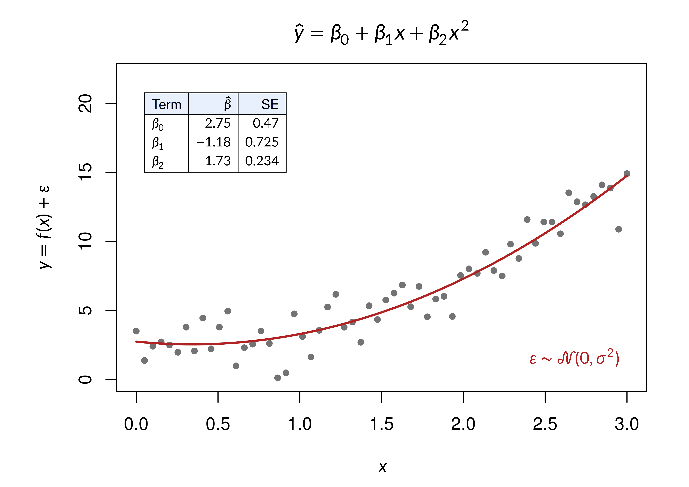

Turn on latex_options(device_math = TRUE) and any plot
label written with $...$ is typeset as LaTeX. The rest of
your plotting code stays the same.
A first plot
library(gridmicrotex)
library(grid)
latex_options(device_math = TRUE)
plot(1:10, (1:10)^2,
main = r"(Slope $\hat{\beta}_1 = \sum_{i=1}^{n} x_i^2$)",
xlab = "Cost $5-$10 per unit",
ylab = r"($\frac{y}{2}$)")
text(3, 80, r"($\int_0^\infty e^{-x^2}\,dx$)", col = "steelblue")
The title, y-axis label and annotation are typeset. The x-axis label has no math in it, so it is drawn as written.
In R Markdown, set the option in the setup chunk. If you turn it off,
do so in a later chunk than the plot, or the plot shows the literal
$...$.
More than plotmath
Tables, display-style operators and other LaTeX work in any label.
The coefficient table below is drawn by an ordinary text()
call:
set.seed(42)
x <- seq(0, 3, length.out = 60)
y <- 2 + 1.4 * x^2 + rnorm(60, sd = 1.1)
fit <- lm(y ~ poly(x, 2, raw = TRUE))
cf <- signif(coef(summary(fit)), 3)
title_eq <- r"($$\hat{y} = \beta_0 + \beta_1 x + \beta_2 x^2$$)"
# Make room for the tall title
h <- latex_dims(title_eq, gp = gpar(fontsize = par("ps")))$height
top <- ceiling(convertHeight(h, "bigpts", TRUE) /
(par("cin")[2] * 72 * par("mex"))) + 2
par(mar = c(4.5, 5.5, top, 2))
plot(x, y, pch = 19, col = "grey45", cex = 0.7, ylim = c(0, 22),
main = title_eq, xlab = r"($x$)",
ylab = r"($y = f(x) + \varepsilon$)")
lines(x, predict(fit), col = "#B22222", lwd = 2)
# Build the table as a single line of text
tab <- sprintf(paste0(
r"(\begin{array}{|l|r|r|}\hline)",
r"(\rowcolor{#E8F0FE}\text{Term} & \hat{\beta} & \text{SE}\\\hline)",
r"(\beta_0 & %s & %s\\)",
r"(\beta_1 & %s & %s\\)",
r"(\beta_2 & %s & %s\\\hline\end{array})"),
cf[1, 1], cf[1, 2], cf[2, 1], cf[2, 2], cf[3, 1], cf[3, 2])
text(0.05, 18, tab, adj = c(0, 0.5), cex = 0.75)
text(2.95, 1.2, r"($\varepsilon \sim \mathcal{N}(0, \sigma^2)$)",
adj = c(1, 0), cex = 0.95, col = "#B22222")
Two tips from this example:
- Keep a formula on one line. A label containing a newline is not recognised as math.
- Anchor a tall label by its centre (
adj = c(0, 0.5)) and leave room around it; see Tall formulas.
Other packages
The option works for any plot drawn on an R graphics device: base
plot methods such as plot(lm), hist() and
legend(), lattice, grid, and ggplot2 (axis titles,
geom_text(), facet strips, legend keys). It does not reach
plotly or rgl’s text3d() labels.
For ggplot2, geom_latex() and
element_latex() are often the better choice; see
vignette("ggplot2-integration").
When is a label treated as math?
A label is typeset only when every $ in it is closed and
each $...$ pair holds something that looks like math.
Everyday dollar signs are left alone:
| Label | Rendered as |
|---|---|
"Revenue ($)" |
text |
"Price is $5 today" |
text |
"Cost $5-$10" |
text |
"Budget $1,000 to $5,000 with $x$ shown" |
text |
"Histogram of df$a_b - df$c_d" |
text |
"$x$" |
math |
"$x^2$" |
math |
"$y = 2x + 1$" |
math |
"Slope $\\hat{\\beta}_1$" |
math |
"\\(\\alpha\\)" |
math |
$$...$$, \(...\) and \[...\]
also work. Write \$ for a literal dollar sign in a label
that also has math.
Tall formulas
Widths are measured correctly, but heights are not: R sizes margins,
titles and legend() boxes for one line of text, so a tall
formula can overflow them. Measure it with latex_dims() and
widen the margin:
h <- latex_dims(r"($\frac{a}{b}$)", gp = gpar(fontsize = par("ps")))$height
bp <- convertHeight(h, "bigpts", TRUE)
# Lines of margin needed
bp / (par("cin")[2] * 72 * par("mex"))
#> [1] 1.041667Round that up and add it to the matching side of
par(mar = ).
Limitations
- The option applies to every plot in the session, including plots from other packages. Labels without math are not changed.
- Math is drawn as outlines, so it cannot be selected in a PDF or SVG.
- Bold comes from
\textbf{}, not from the plot’s font face. -
\includegraphicsis skipped, and rounded box corners are square. - A label that cannot be read is drawn as plain text, without a warning.
- It does not work together with
showtext::showtext_auto(). -
expression()labels are not affected. - corrplot reads a label starting with
$itself; start it with something else.